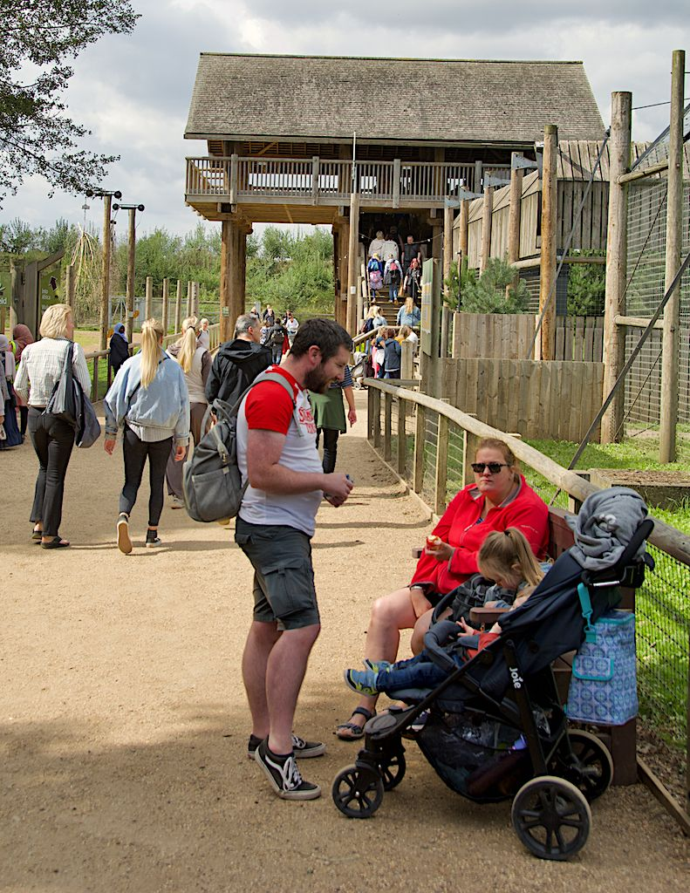

ब्रिटेन के वन्यजीव पार्क में बाघ के हमले में मारे गए व्यक्ति की पहचान William Chapman के रूप में
15 अक्टूबर को खुली जांच में बताया गया कि 24 वर्षीय Chapman की मौत 10 अक्टूबर को दो बाड़ें चढ़कर घेरे में घुसने के बाद कई गंभीर चोटों से हुई। उनके परिवार ने उनकी मानसिक स्वास्थ्य देखभाल को लेकर चिंताएं उठाई हैं, और पूर्ण जांच 18 मार्च 2027 के लिए तय है।

मुख्य बिंदु
- **अपडेट 17:12 UTC, 15 अक्टूबर 2026**
- William Chapman की मौत की जांच गुरुवार 15 अक्टूबर को Doncaster Coroner's Court में खुली। सुनवाई में बताया गया कि 24 वर्षीय Chapman 10 अक्टूबर को दोपहर करीब 1:30 बजे दो बाड़ें चढ़कर Yorkshire…
- कोरोनर अधिकारी Caitlin Brookes ने अदालत को बताया कि बाघ Chapman के पास आया और उसके बाद हुए संपर्क से उन्हें ऐसी चोटें आईं जिनसे जल्दी ही उनकी मौत हो गई। पार्क कर्मचारियों ने बाघ को सुरक्षित किया…
**अपडेट 17:12 UTC, 15 अक्टूबर 2026**
William Chapman की मौत की जांच गुरुवार 15 अक्टूबर को Doncaster Coroner's Court में खुली। सुनवाई में बताया गया कि 24 वर्षीय Chapman 10 अक्टूबर को दोपहर करीब 1:30 बजे दो बाड़ें चढ़कर Yorkshire Wildlife Park में बाघ के घेरे में घुसे, जिसके बाद कई गंभीर चोटों से उनकी मौत हो गई।
कोरोनर अधिकारी Caitlin Brookes ने अदालत को बताया कि बाघ Chapman के पास आया और उसके बाद हुए संपर्क से उन्हें ऐसी चोटें आईं जिनसे जल्दी ही उनकी मौत हो गई। पार्क कर्मचारियों ने बाघ को सुरक्षित किया और पैरामेडिक्स ने मौके पर ही उनकी मौत की पुष्टि की। पहले शव परीक्षण में अस्थायी कारण जानवर से हुई मुठभेड़ से जुड़ी कई गंभीर चोटें बताया गया। वरिष्ठ कोरोनर Nicola Mundy ने कहा कि उनका कार्यालय अभी उनकी चोटों की सीमा पर एक पूर्ण रिपोर्ट का इंतजार कर रहा है।
अदालत को बताया गया कि उनका पूरा नाम William Harry Bruce Chapman था। उनका जन्म 2002 में Chichester में हुआ था, वे स्वरोजगार ऑनलाइन व्यापारी के रूप में काम करते थे और Doncaster में रहते थे। उनके सौतेले पिता ने 13 अक्टूबर को मुर्दाघर में उनकी पहचान की। उनका परिवार सुनवाई में शामिल नहीं हुआ। कोरोनर ने कहा कि वे बेहद कठिन समय से गुजर रहे हैं और उन्हें जानकारी दी जाती रहेगी।
Brookes ने कहा कि Chapman को सिजोफ्रेनिया का निदान हुआ था और पहले उन्हें मनोविकृति के दौर आ चुके थे। वे Doncaster में वयस्क मानसिक स्वास्थ्य सेवाओं के अधीन थे, लेकिन उन्हें उच्च स्तर पर कार्यशील और स्वतंत्र बताया गया, जिन्हें देखभाल की कोई आवश्यकता नहीं थी। उनके परिवार ने उनकी मौत से पहले मानसिक स्वास्थ्य सेवाओं से उनके संपर्क को लेकर कई चिंताएं उठाई हैं। Rotherham, Doncaster and South Humber NHS Foundation Trust ने जांच शुरू की है।
City of Doncaster Council स्वास्थ्य और सुरक्षा जांच कर रहा है और अपने निष्कर्ष कोरोनर के साथ साझा करेगा। पूर्ण जांच 18 मार्च 2027 के लिए तय की गई है।
10 अक्टूबर से बंद पार्क ने कहा कि वह Land of the Tiger क्षेत्र सहित शुक्रवार 16 अक्टूबर को फिर खुलेगा। उसने कहा कि घटना में शामिल Amur बाघ Altai सुरक्षित और स्वस्थ है और उसे मारा नहीं जाएगा, और कर्मचारियों के लिए आघात सहायता दी जा रही है।
पहले की रिपोर्टिंग
शनिवार को Yorkshire Wildlife Park में बाघ के घेरे के अंदर जान गंवाने वाले व्यक्ति की पहचान William Chapman के रूप में हुई है, जो अपने बिसवां दशक की उम्र में एक पूर्व बाल अभिनेता थे।
South Yorkshire Police के अनुसार, Chapman शनिवार को दोपहर 1:30 बजे के कुछ देर बाद एक आगंतुक पैदल पुल से उतरकर Amur बाघ Altai के घेरे में घुस गए। उन्हें मौके पर ही मृत घोषित कर दिया गया। वे Doncaster के पास स्थित इस पार्क में अकेले आए थे।
एक बाल अभिनेता
BBC की रिपोर्ट के अनुसार, बचपन में Chapman 2009 में प्रसारित ITV के शो May Contain Nuts में नजर आए थे, जिसमें Shirley Henderson मुख्य भूमिका में थीं। 2012 में उन्होंने BBC की एक शैक्षणिक फिल्म में टीकाकरण के अग्रदूत डॉक्टर Edward Jenner का युवा किरदार निभाया था। उनके अभिनय क्रेडिट वहीं खत्म हो जाते हैं।
गवाहों ने क्या देखा
ऊंचे पैदल रास्ते पर मौजूद आगंतुकों ने बताया कि अंदर जाने से पहले Chapman ईयरफोन पहने घेरे के पास इधर उधर टहल रहे थे। बाघ वाले पुल पर मौजूद एक जोड़े ने कहा कि वे नाच रहे थे और उन्होंने उनसे अपनी तस्वीर लेने को कहा था। एक अन्य गवाह ने Sky News को बताया कि बाघ के अपने मंच से उतरने से पहले उन्होंने Chapman को घेरे के अंदर चारों हाथ पैरों पर झुका देखा था।
अन्य आगंतुकों ने जानवर का ध्यान भटकाने के लिए बाड़ पर धमाका किया। काम नहीं आया।
रिपोर्टों के अनुसार, Chapman ने घेरे के अंदर बाघ की ओर बढ़ते हुए खुद का वीडियो बनाया था, और हमले से कुछ देर पहले वह फुटेज ऑनलाइन साझा हुआ था। वह खाता अब हटा दिया गया है। इस हफ्ते उनकी अंतिम पोस्ट खूब साझा हो रही हैं। पुलिस ने लोगों से हमले की फुटेज साझा न करने को कहा है।
पार्क बंद, बाघ को नहीं मारा जाएगा
पार्क को शनिवार को खाली कराया गया था और पुलिस तथा Doncaster Council की जांच चलने तक वह बंद है। परिषद ने इस मौत पर स्वास्थ्य और सुरक्षा जांच शुरू की है। पुलिस ने कहा कि Chapman के परिवार को सूचना दे दी गई है और विशेषज्ञ अधिकारी उनकी मदद कर रहे हैं।
Yorkshire Wildlife Park ने Chapman के परिवार के प्रति गहरी संवेदना जताई। पार्क ने पुष्टि की कि घटना में Altai को चोट नहीं आई और उसे मारा नहीं जाएगा।
स्रोत
- People: Man fatally mauled by tiger identified, animal will not be killed
- LADbible: Man who jumped into tiger enclosure was former child actor who starred in ITV and BBC shows
- PA via The Oldham Times: Tiger attack victim had experienced previous bouts of psychosis, inquest hears
- The Times: Tiger attack victim's family 'concerned' about mental health care
- Grimsby Telegraph: Inquest opens into death of William Chapman